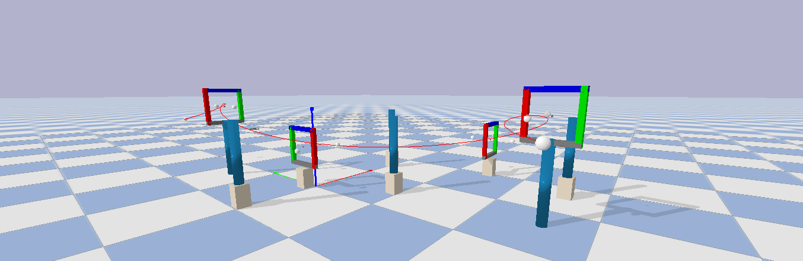

Making robots move with less work.
Welcome to the portfolio website of robotics researcher and student, Spencer Teetaert

I work at the intersection of machine learning and control for robotic systems. My work has focused on developing tools that enable easy transfer from simulation to real world hardware for flying and continuum robots.